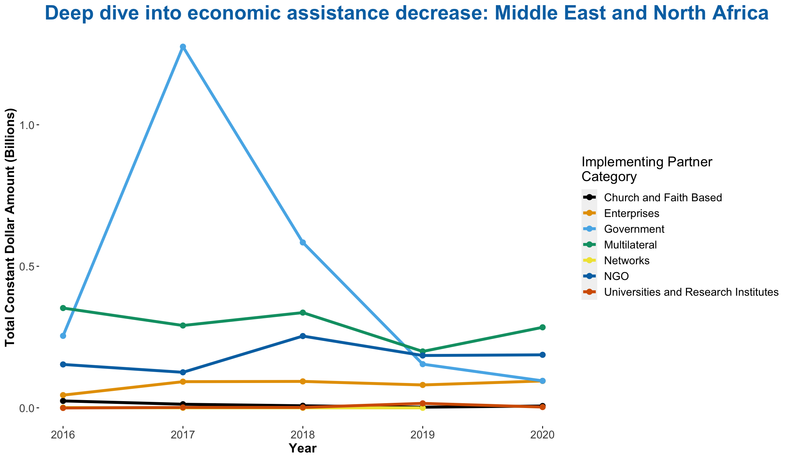
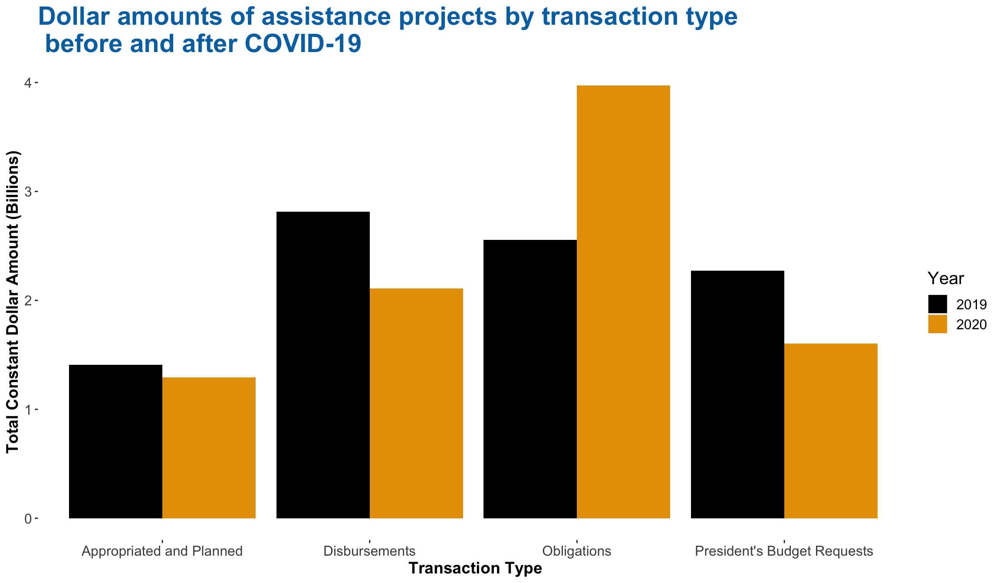
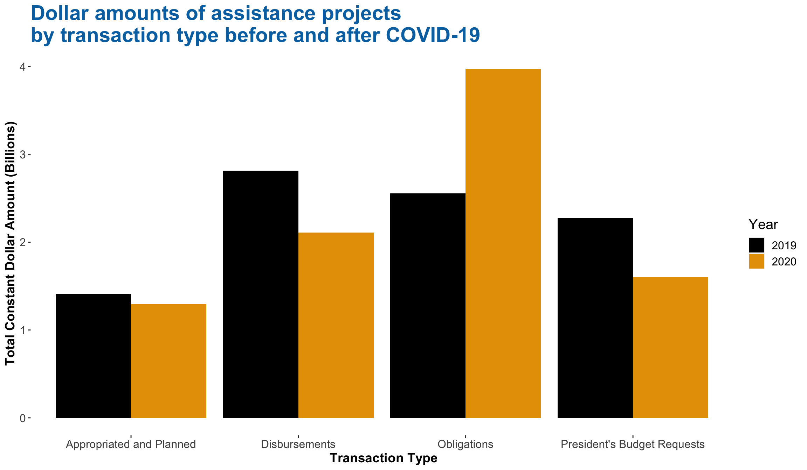

Chapter 5 Results
5.1 Trend of changes in foreign assistance objective
Figure 5.1 plots the time series of aid programs with economic objectives versus military objectives from 2015 to 2020. We can clearly see that the scale of economic assistance is greater than military assistance for the entire time span in question, while the pattern of changes over time is different. The military assistance indicates a reasonably fluctuating trend and generally stays at the same level. In contrast, the economic assistance always shows a continual downward trend, most noted . Thus, we intend to explore the reason for the decrease change of economic assistance.
Figure 5.1: U.S foreign aids directed toward different objectives
The trend of economic assistance in low income and lower-middle income countries is similar indicated by the following graph. Then, we want to deep dive into economic assistance towards different region.

Figure 5.2: U.S foreign aids directed towards different economies
We are interested in “Sub-Saharan African” and “Middle East and North Africa” groups since the later has a fancy fluctuating trend between 2016 to 2020 and the former has a similar trend with economic assistance as of 2017, which may be the main reason to explain the downward trend. For other groups, the economic assistance does not change too much.

Figure 5.3: U.S. economic assistance for different regions
Now, we want to explore the trend of implementing partner category for economic assistance in “Sub-Saharan African” region. From the graph below, we can see the government category has decreased a lot as of 2017 but the change for other categories have minor changes, which is consistent with the change of economic assistance as of 2017 in “Middle East and North Africa”

The below figure is the trend of implementing partner category for economic assistance in “Middle East and North Africa” region. It shows that the government category is the dominant factor that affects the economic assistance. Similarly, the trend is consistent with the change of economic assistance in “Middle East and North Africa” region.

5.2 Explore the distribution of dollar amounts of foreign assistance in countries in “South and Central Asia” as well as “Middle East and North Africa” region in recent 5 years and deep dive into the top country

We want to examine the distribution of the dollar amounts of aids disbursed to the “South and Central Asia” and “Middle East and North Africa” region, since the debate revolving the US’s diplomatic relations and foreign policy outcomes in these regions are often at the center of the political discourse. We plot a boxplot plot to visualize and summarize the distribution of aids they received from 2016 to 2020. For clarity of presentation, we select data with Constant.Dollar.Amounts within in the range [$-5 million, $5 million] to exclude extreme outliers that interfere with the scale and shape of the boxplots. From the following plot, we find that Sri Lanka tops the dollar amounts of aids received, if we order by the median. It also has a much wider range between the first and third quantiles, while other countries such as Afghanistan and Pakistan demonstrate an overall much larger spread.

We then decide to take a closer look at Afghanistan as to understand if the spread may be a result of changes in the political climate of the US and Afghanistan. Similarly, we use year as a proxy for those changes to plot a time series. As seen from Figure , aggregate dollar amounts of the assistance projects of Afghanistan underwent dramatic changes. From 2011 to 2012, the assistance increased over 200% but decreased nearly 80% by 2014. Then we saw a significant spike again in 2015 peaking at 2019 and a fall in 2020.

Figure 5.4: Trend of total constant dollar amounts of foreign assistance projects for Afghanistan
5.3 What is the distribution of “international category” and to explore the difference in income group
Below we made a mosaic plot of “Transaction Type” and “Region, which is binned into 5 levels. You can see from the mosaic plot that there isn’t much of a relationship between transaction type and region name. It looks like no matter in which region, the proportion of transaction type are similar. Therefore, nothing conclusive can really be said about transaction type and region. If given more time, we would collect a wider range of samples and test this again.

Figure 5.5: Composition of transaction type of aids in each implementing category
We care about the pattern of foreign assistance towards “international category”, then we rank the average of those categories in recent five years by using bar chart. And we find the top 3 categories are Health and Population, Governance and Humanitarian.

Next, we are interested in the those categories in relation to the income group. Below is a bar graph of total assistance and the income group, faceted by International Category. It seems like the assistance are different in Low Income Country and Lower Middle Income Country towards Governance, Health and Population and Humanitarian categories. More specifically, the assistance for Health and Population and Humanitarian categories for Low Income Country is more than Lower Middle Income Country.

“Health and Population” is the top 1 international category and it shows different distribution in Low Income Country and Lower Middle Income Country. Thus, we want to explore the rank of country for Health and Population category in two income groups. As you can see below, in Low Income Country, the top 3 countries are Tanzania, Uganda and Mozambique. Nigeria, Zambia and Kenya are top ranking countries in Lower Middle Income Country.

5.4 Did COVID-19 affect the patterns of different types of aids?
The two charts below illustrate how the pandemic influence pattern of aid type and transaction type. We can see after the pandemic, Project-Type decreased a lot but other Aid Type only had minor changes. For Transaction Type, almost all types have decreased except for the rise of Obligation Type. Thus, we can conclude that COVID-19 did affect the pattern of aid type and transaction type, more specifically, it cause decrease of almost types.
